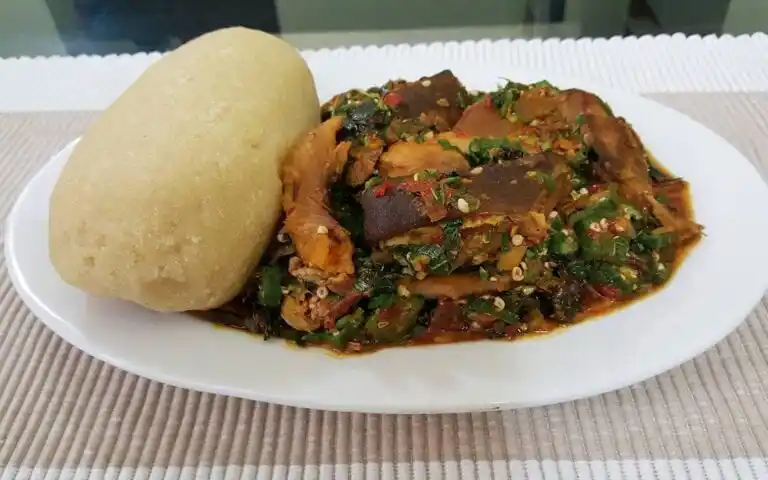

Okra Soup Recipes

OKRA SOUP
This is a very popular delicacy in west Africa and widely enjoyed by Nigerians. It is a very rich delicacy made with vegetables and other ingredients. Here is the recipe, but this time with a twist – extra flavour coming from assorted meat sauce. This is a rich Nigerian cuisine – a favorite amongst many!
Ingredients
- Fresh Okra (finely chopped or use grater)
- Palm oil
- Fresh fish (cleaned and prepared )
- Dry Fish (stock fish, local dried fish)
- Fresh or dried prawns
- Maggi or Knorr cubes
- Hot pepper
- Ground crayfish
- Nigerian pumpkin leaves (or spinach)
- Salt and pepper to taste
Steps
- Place pot on medium heat, add very little water, cover and bring to a boil.
- Add fish (fresh, dried, stock fish ), and prawns. Season with the bouillons cubes and allow to cook for about 15 minutes till fish is tender.
- Add crayfish powder, palm oil, maggi, pepper. Stir and leave to simmer for about 10 minutes.
- Add in chopped okra, and stir – taste and adjust for Seasoning. Reduce the heat and simmer for about 5 minutes.
- Serving: dish okra soup in a plate, add meat sauce on top. Serve with Semolina, fufu, garri or pounded yam.
- Enjoy!